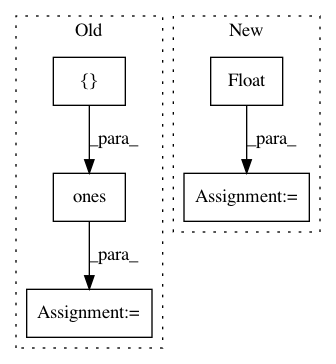

2a11d3f0bad2430b81628fa6cb0a6301d099d77d,performer/fast_attention/tensorflow/fast_attention_test.py,TransformerLayersTest,test_softmax_noncausal_attention_block_output,#TransformerLayersTest#,53
Before Change
num_heads = 1
dim = 4
num_random_features = 350
query = tf.ones([batch_size, length, num_heads, dim])
key = tf.ones([batch_size, length, num_heads, dim])
value = tf.ones([batch_size, length, num_heads, dim])
kernel_transformation = fast_attention.softmax_kernel_transformation
projection_matrix = fast_attention.create_projection_matrix(
After Change
attention_block_output = fast_attention.favor_attention(
query, key, value, kernel_transformation, False, projection_matrix)
query = tf.multiply(query, 1.0 / math.sqrt(float(dim)))
attention_scores = tf.einsum("BXHD,BYHD->BXYH", query, key)
attention_scores = tf.nn.softmax(attention_scores, axis=2)
exact_attention_block_output = tf.einsum("BXYH,BYHD->BXHD",
attention_scores, value)
max_error = 2.0
error = tf.math.abs(
(exact_attention_block_output - attention_block_output) /
exact_attention_block_output)
In pattern: SUPERPATTERN
Frequency: 3
Non-data size: 5
Instances
Project Name: google-research/google-research
Commit Name: 2a11d3f0bad2430b81628fa6cb0a6301d099d77d
Time: 2020-12-11
Author: xingyousong@google.com
File Name: performer/fast_attention/tensorflow/fast_attention_test.py
Class Name: TransformerLayersTest
Method Name: test_softmax_noncausal_attention_block_output
Project Name: facebookresearch/Horizon
Commit Name: 9cf8f6cdf6a2008843cb37da6e34b8d10353b0bf
Time: 2019-12-12
Author: kittipat@fb.com
File Name: ml/rl/preprocessing/sparse_to_dense.py
Class Name: PythonSparseToDenseProcessor
Method Name: process
Project Name: modAL-python/modAL
Commit Name: 9bf5f79f13ebd9f86111e75b872d692b92eec5b9
Time: 2018-09-18
Author: theodore.danka@gmail.com
File Name: tests/core_tests.py
Class Name: TestUtils
Method Name: test_linear_combination